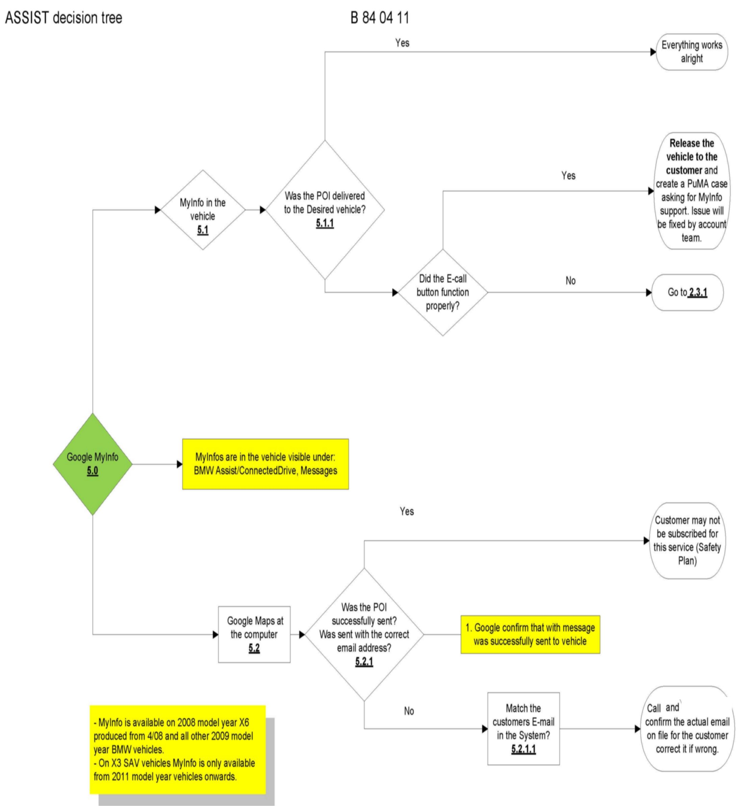
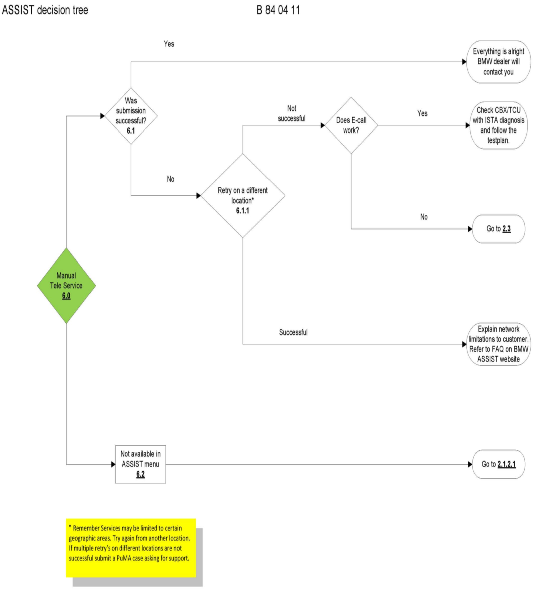

BMW ASSIST(R) - System Isn't Working Properly
SI B84 04 11Communication Systems
September 2011
Technical Service
SUBJECT
BMW ASSIST(TM) Troubleshooting
MODEL
Vehicles with option code 639 (BMW ASSISTTM)
SITUATION
The BMW ASSIST(TM) system is not working properly for various reasons:
^ The Telematics Control Unit (TCU) or Communications Box (CBX) was replaced.
^ It is not possible to initialize services from the menu.
^ BMW ASSIST(TM) calls have no voice or data connection.
^ MyInfo (Google(TM) Send to Car) is not working properly.
^ BMW ASSIST(TM) was previously deactivated in the vehicle.
CAUSE
Various reasons
Please be aware that calls can intermittently have no voice or no data connection. This is not a fault and might be related to poor network coverage or no GPS reception due to the vehicle location. Please retry from a different location.
PROCEDURE
^ Diagnose the vehicle using ISTA (Integrated Service Technical Application) diagnosis and work through any related faults.
^ Please check if there is an active Electronic Subscriber Agreement (ESA) for this customer.
^ Check if the area has limited network coverage - retest from a different location.
^ If the CBX was replaced, please follow SI B84 03 11 for the activation procedure.
^ If the CDMA-TCU was previously deactivated or replaced, please call 1-201-307-4347 for activation. Have the VIN and the ESN of the TCU available.
^ Please follow the attached decision tree for further troubleshooting.
WARRANTY INFORMATION
This Service Information bulletin is intended to provide technical, diagnostic and/or repair process information only.
If an eligible warranty claim results that includes this process, it should be submitted following the regular warranty claim procedures that apply.
Please refer to the Warranty Policy and Procedures Manual regarding proper support, documentation and archiveing required for claims, as applicable.
ATTACHMENTS


B840411_Procedure